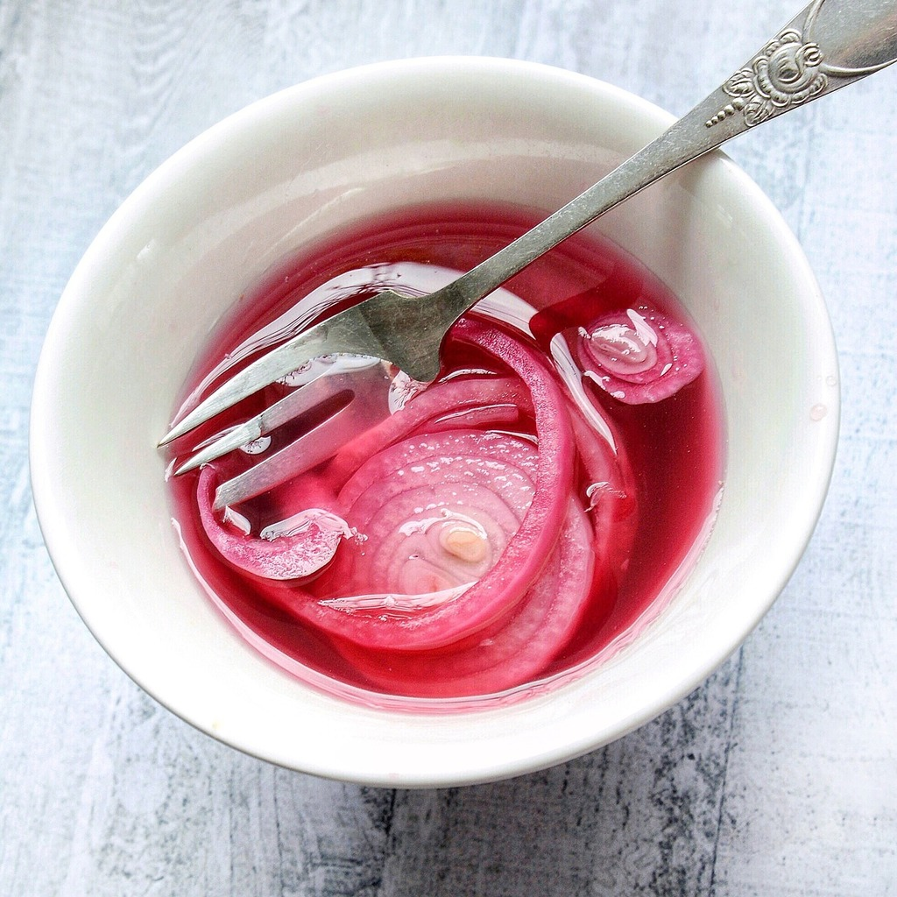

Pickled Onions

What are Pickled Onions?
Pickled onions are a food item consisting of onions (cultivars of Allium
cepa) pickled in a solution of vinegar and salt, often with other
preservatives and flavourings.
Ingredients
- Red Onions
- White Vinegar
- Salt
- Sugar
Steps
- Thinly slice up red onions.
- Heat up the white vinegar, salt, and sugar in a sauce pan.
- Stir the vinegar mixture until the salt and sugar has dissolved. Let cool.
- Place sliced red onions in a container and pour vinegar mixture over the top.